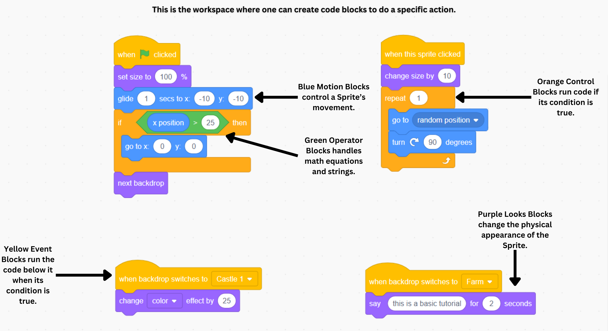

By Ethan Lu
The article discusses a new approach to facilitating the movement of warehouse items using mobile robots. This device is called MRWA, short for Mobile Robot for Warehouse Automation. Specifically, the researchers attempted to localize the MRWA so it would choose the optimal, shortest path without colliding into any obstacles or other MRWAs. To localize the robot's movement, the researchers installed RFID (radio frequency identification) tags across the warehouse floor and equipped the MRWAs with complementary RFID readers. Some common RFID-tech items that we use today are credit cards and amusement park wristbands, which can be scanned when held close to an RFID reader. This innovation would enable MRWAs to carry items from one rack to another, since each floor panel has a unique RFID tag that would enable the robot to detect the starting point, build an optimal path, and arrive unscathed at its destination. In a long-term outlook, using MRWA robots aims to automate warehouse systems to become more efficient as well as reducing labor costs in its operations.
Jupyter Notebook is an open-source, browser-based interface for creating living documents called notebooks. As an open source tool, Jupyter Notebook enables users to distribute and modify publicly available programs, which makes it an attractive platform for active collaboration. Moreover, as a web-based application, Jupyter makes it more convenient for users to experiment with ideas and analyze data, since it doesn't require physically installing software on the devices. Another primary reason for its popularity as a "code prototyper" is its runtime flexibility. A user can run code in individual input cells, which essentially allow the user to test a certain block of code without having to run the rest of the code. Thus, it is very efficient to pinpoint which part of the program is causing an error by running each cell one-by-one. Jupyter Notebook uses built-in computational engines called kernels to support multiple programming languages within a notebook, such as Python, Julia, and C++. What Jupyter lacks in feasibility for coding large-scale projects is compensated by its convenience in running small blocks of code and deciphering potential errors.
An IDE, short for integrated development environment, is an application that provides a comprehensive set of resources for software development. IDEs typically consist of a source code editor, a debugger, and a built-in executable tool. In layman terms, they enable programmers to write and edit code more efficiently through built-in shortcuts, colored text formatting, and line autocompletion. Moreover, IDEs can directly convert the user-written source code into machine language that the computer can execute and display back to the user. If there are any errors during the code's compilation or execution, the IDE will display what error was detected and where it is located in the program. IDE's built-in features offer users a more productive and streamlined coding experience. One IDE, Visual Studio Code, or VSCode, has gained popularity for its additional features, which include its customizable appearance, small download size, version control management known as Git integration, and its open-source codebase.
EDA, short for exploratory data analysis, is a specialized process related to the field of data science. EDA is a programmed tool that investigates correlations and patterns among datasets, and these insights can help data scientists and analysis develop more complex large language models and machine learning algorithms. The range of EDA's usage is quite broad, as it essentially can be applied to any research question involving a large amount of data, whether it be a sports-related stat or a financial market prediction. In turn, the EDA will output basic features of the dataset, such as its correlations and trends, anomalies and outliers, and a fair foundation for a hypothesis. Some popular environments, where the code is executed, for EDA are Jupyter Notebook and Python Ecosystem, since they enable swift visualization, data cleaning, and code collaboration. Exploratory data analysis serves as a practical tool for fine-tuning one's basic understanding of a dataset before implementing it in more complex algorithms.
A hackathon is an event where participants, not necessarily hackers but rather enthusiastic programmers, collaborate on projects that seek to create innovative solutions to a given problem for a contiguous period of time of around 24 to 72 hours. Hackathons are great events to gain exposure to fostering innovation, collaborating effectively, networking with other bright individuals, and implementing and gaining programming skills. At the conclusion of the development phase, teams often present their project in front of a judging panel, after which an overall winner for the event is selected. However, hackathons serve as formative experiences for all who participate in them. Hackathons cultivate a collaborative culture and promote diverse participation since participants often come from various backgrounds and experiences. If the hackathon is in-person, one can possibly expect participants who travel long distances to compete. As a prestigious university driven to promote tech culture in the Southeast, several hackathons are organized by Georgia Tech's student-run clubs and held on the campus every year, such as HackGT, AI ATL, and Hacklytics.
Scratch is a visual programming language that is targeted towards beginner programmers to learn basic coding concepts in an engaging manner. Scratch uses block-based programming rather than text-based programming to simplify concepts and negate complex syntax. It further implements a built-in graphical user interface and animated objects called sprites to create a visual interface that can be interacted with through coding. As an open source environment, users can freely share and remix their coding projects with others. This playful learning environment encourages a user to explore creativity by programming the sprites into game-like and story-time projects. Scratch is an effective tool to generate interest among young learners in gaining coding experience and potentially further exploring it as a possible career path. Many elementary and middle schools in the U.S. incorporate Scratch as a programming tool in their academic curricula, since it has a short learning curve, fosters a fun, interactive learning experience, and exposes more young students to computer science.
